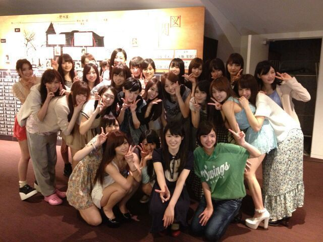

はあい(/*´∨`*)/
ろってぃ−だお−.
東京公演プリンシパル
無事終了致しました〜 ♪パチパチ
私達のことを
応援してくださった皆さん
まひろのことを
応援してくださった皆さん
そして、
今回プリンシパル公演に
たずさわって頂いた
大勢のスタッフの皆様方
本当本当に
ありがとうございました! ! !
それと ペットのサスケが
病気のため 東京には
これなかった家族,
大阪からエールをくれました!
千秋楽では いつみ、沢村に立候補し
結果ダメだったけど
全力でやりきったので
心残りしたことはないです ☆!
千秋楽の日、
実は喉が限界でした。
『もっと出したいのに
もっと出したいのに...』って
思いながら 自分の腫れた喉が
悔しくて、それを理由に
気持ちが下がって
自分の気持ちをコントロール
できない自分も悔しかった。
『たくさんの方が見に来てくださっているのに申し訳ないわ !
後 残り一回なんやから
後のことなんか考えらんと
夜の部はやりきろう ! !』と思って
最後 出るとこまで
声を出しきりました(^^)
最後に皆さんの楽しそうな
笑顔が見れて本当に幸せでした !
本当にありがとう (〃∨〃)
大好きです.
終わってから皆で打ち上げ☆
まひろ、まいやん、さゆりん
まあや、らりん、ゆったんと
同じテーブルで
色々お話しながら食べました !
楽しかったあ おいちかったねぇ
(〃ω〃)
皆本当にお疲れ様ね.
あっ、
焼き肉ぢゃなくってよ,イタリアン♪
ぴょん.
は−−−い //
そしてそして
何年ぶりだろう‥５年ぶり?
熱出してしまったぉ(´~`)
体調くずしてる暇なんてないぉー
明日までに治してやるぅぅっ(・∨・)
お母さんに電話で
「大丈夫大丈夫ー!
気合で治すし しんどないからー」
って何回ゆうても
「大丈夫ちゃうっちゅーねん
何言ってんねん
冷えピタとか氷とかあるんかあ!?」
...。
冷えピタ
買いに行ってきます(^^)
よしっ!
ではっ 明日も頑張ろう !
ぢゃあねんっ(・∨・)のし
まひろどこいるか
わかりますかん?
